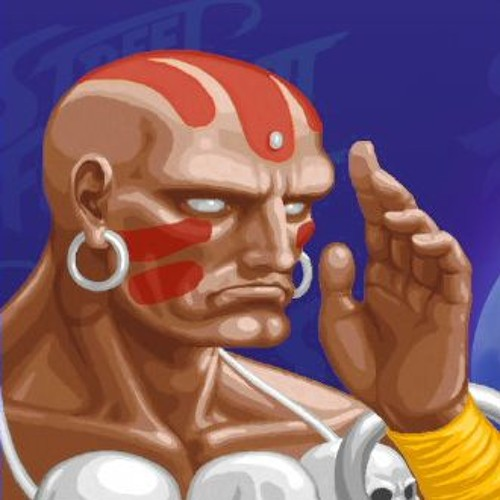

Select character
- 
Ryu
Ryu é um personagem fictício e protagonista da franquia de jogos eletrônicos de luta Street Fighter. Ryu estreou o primeiro Street Fighter em 1987, onde ele e seu melhor amigo Ken Masters eram participantes de um torneio de artes marciais.